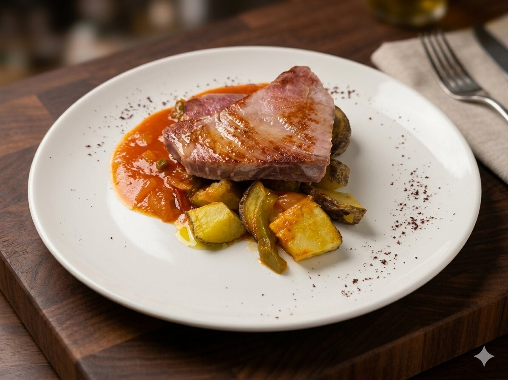

Nuestros básicos

Calidad en cada detalle
Amstel de barril, cafés de especialidad y agua filtrada KM0. Porque hasta lo básico se nota.
Platos reconocibles, raciones generosas y precios para todo el mundo. Pide lo que te apetezca, solo o para compartir.

Atún rojo, arroces, pescados, pollos, ensaladas y postres caseros.
Todos los platos de la carta se pueden pedir también para llevar. Pregunta en restaurante o pide por teléfono.
Consulta nuestro menú del día o el menú Shelby para opciones con bebida incluida.
Amstel de barril, cafés de especialidad y agua filtrada KM0. Porque hasta lo básico se nota.